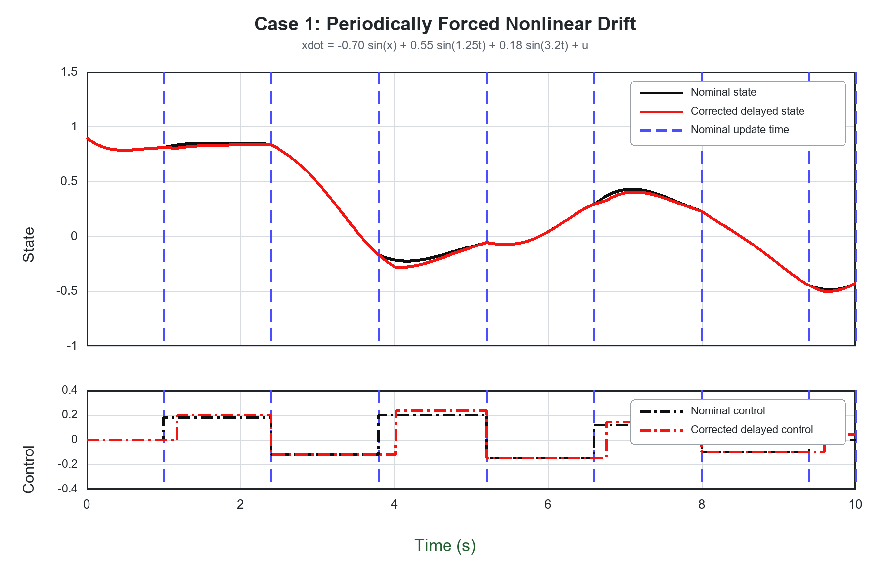
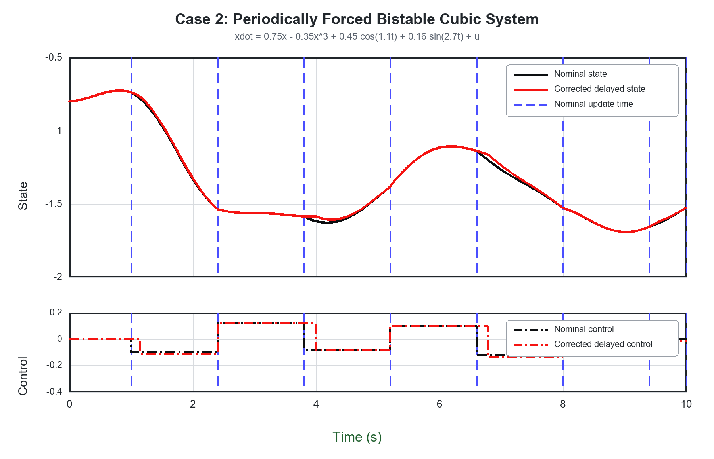
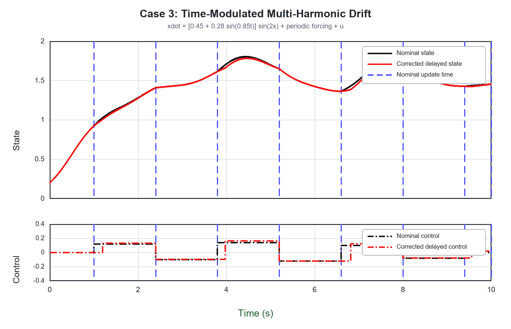

Solution 1
Two Solution Directions
Nonlinear Systems with Timing Perturbations
This project develops two complementary approaches: a local Jacobian-based LTV formulation and a data-driven Koopman model identified from nonlinear trajectory data.
Solution 2 · Primary Paper Direction
Data-Driven Koopman Method
Learn a lifted linear predictor from state-input trajectory data for timing-aware control. View Solution 2Solution 1 · Local Model
Jacobian Linearization
Consider a scalar nonlinear plant and its nominal trajectory. With \(e(t)=x(t)-x^n(t)\), the first-order error dynamics are time-varying because the Jacobian is evaluated along \(x^n(t)\).
\[
\dot{x}=f(t,x)+b\,u, \qquad
\dot{x}^{n}=f(t,x^{n})+b\,u^{n},
\]
\[
A(t)=\left.\frac{\partial f(t,x)}{\partial x}\right|_{x=x^{n}(t)},
\qquad
\dot e(t)\approx A(t)e(t)+b\bigl(u(t)-u^{n}(t)\bigr).
\]
Scalar Controller
Timing-dependent correction gain
Let the delayed update arrive at \(\tau_k=t_k+\Delta_k\). Over the remaining interval, a constant feedback correction is applied to the nominal input.
\[
u(t)=u_k^n-K(\Delta_k)e(\tau_k),
\qquad t\in[\tau_k,t_{k+1}),
\]
Gain for the locally linearized scalar system
\[
K(\Delta_k)=
\left[
b\int_{\tau_k}^{t_{k+1}}
\exp\!\left(-\int_{\tau_k}^{s}A(r)\,dr\right)ds
\right]^{-1}.
\]
Example
\(f(x)=\sin x\)
Along the nominal trajectory, \(A(t)=\cos\!\bigl(x^n(t)\bigr)\). Substituting this Jacobian gives
\[
K_{\sin}(\Delta_k)=
\left[
b\int_{\tau_k}^{t_{k+1}}
\exp\!\left(
-\int_{\tau_k}^{s}\cos\!\bigl(x^n(r)\bigr)\,dr
\right)ds
\right]^{-1}.
\]
For the first-order LTV error model, this gain drives the predicted error to zero at the next nominal update time.
Solution 2 · Primary Paper Direction
Data-Driven Koopman Method
The second route learns a lifted linear predictor directly from simulated or measured state-input trajectories. Rather than deriving a Koopman model analytically, the model matrices are identified from data. This is the primary direction being developed for the paper.
In Development
Identify the lifted model from data
Snapshot pairs \(\{x_k,u_k,x_{k+1}\}\) are lifted through selected or learned observables \(z_k=\psi(x_k)\), and the finite-dimensional predictor is fitted by regression.
\[
\begin{bmatrix}A_K & B_K\end{bmatrix}
=Z_+
\begin{bmatrix}Z_-\\ U_-\end{bmatrix}^{\dagger},
\qquad
z_{k+1}\approx A_Kz_k+B_Ku_k.
\]
The identified lifted model will then be used for timing-perturbation prediction and controller design. Data generation, observable selection, and validation results are under development.
Solution 1 · Simulation
Three scalar nonlinear cases
Each run evaluates the Jacobian along the nominal trajectory and recomputes the scalar gain at the delayed update time. The simulations use explicit Euler integration with \(dt=10^{-4}\,\mathrm{s}\).
The upper panel isolates the smooth state trajectories; the lower panel shows the piecewise-constant controls. Black denotes the nominal system, red the delayed system with Jacobian-based correction, and blue dashed lines the nominal update times.
Case 1 · Periodic Forcing
Forced nonlinear sine drift
\(\dot x=-0.70\sin x+0.55\sin(1.25t)+0.18\sin(3.2t)+u\)
- Timing perturbation
- \(0.16\text{--}0.22\,\mathrm{s}\)
- RMS error reduction
- 38.8%

Case 2 · Bistable Cubic
Forced cubic system
\(\dot x=0.75x-0.35x^3+0.45\cos(1.1t)+0.16\sin(2.7t)+u\)
- Timing perturbations
- \(0.15\text{--}0.20\,\mathrm{s}\)
- RMS error reduction
- 17.8%

Case 3 · Time Modulation
Multi-harmonic nonlinear drift
\(\dot x=[0.45+0.28\sin(0.85t)]\sin(2x)+0.32\cos(1.75t)+0.14\sin(3.6t)+u\)
- Timing perturbations
- \(0.16\text{--}0.22\,\mathrm{s}\)
- RMS error reduction
- 37.7%

RMS reductions compare the corrected trajectory with the same delayed execution without feedback correction. Simulation script